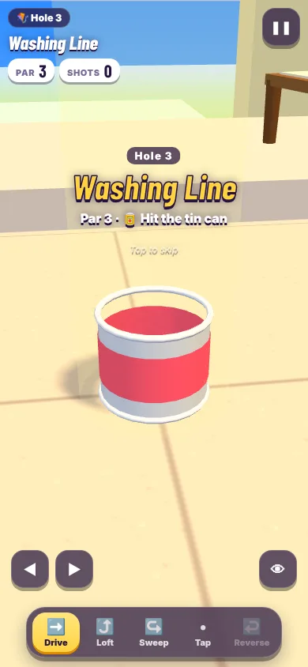
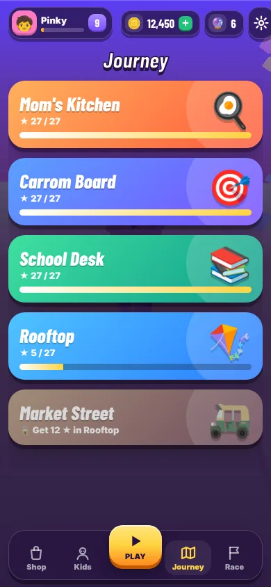
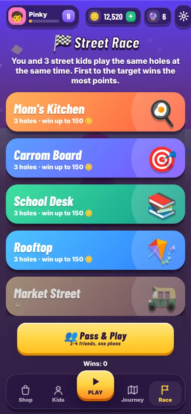
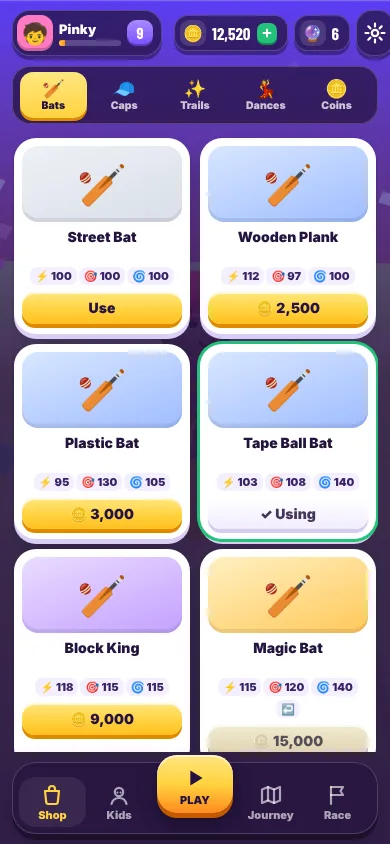

Aim, toss, tap
Drag to aim and pull for power. Your friend tosses the ball; tap when the needle is in the green for a PERFECT hit.
Gali Cricket is now Chhoti Duniya. Your little street kid stands on a kitchen counter as big as a city. Aim, let your friend toss the ball, tap at the right moment and send it past hot pans, tea lakes and carrom coins to knock over the tin in as few shots as you can.
Easy to pick up, hard to put down: every hole is a little puzzle with a bat.
Drag to aim and pull for power. Your friend tosses the ball; tap when the needle is in the green for a PERFECT hit.
Mom's Kitchen, the Carrom Board, the School Desk, the Rooftop and Market Street. Every world ends with a boss hole: hit the stumps.
Drive along the ground, loft it over walls, sweep it round a corner, tap it gently or play the reverse with a magic bat.
Hot pans stop the ball dead, tea and puddles cost a shot, fielders catch your lofts, carts roll by and washing lines swing.
Street Race against three computer kids on the same holes at once, or Pass & Play: up to four friends take turns on one phone.
Seven kids with their own looks and strengths, bats, caps, ball trails and victory dances, all bought with coins you win by playing.




One hole on the bus, or a race with friends in the evening.
A game that respects your time, your phone and your data.
An ad break can come only between holes, never while you play. Reward videos (double coins, free coins) are always your choice.
Every kid, bat, cap, trail and dance can be bought with coins you win by playing. Nothing random is sold for real money.
A small download that plays fully offline, with a low-graphics mode for older phones.
Your progress stays on your phone, with no account, no chat and no online play. Younger players get child-safe ads and no analytics. Privacy policy
The new game is in testing now and is coming to Google Play for Android. This page will link straight to the store when it is out.
Gali Cricket Chase 3D became Chhoti Duniya with version 3.0. When you update, your coins, your purchases and your settings come with you. If you bought the Starter Pack you get the Golden Bat.
Yes, with optional ads. After 30 free holes one purchase of any pack (from a small coin pack upward) keeps every hole open for ever. Coin packs, a Starter Pack and Remove Ads are on Google Play if you want them.
It is made for budget Android phones and has a low-graphics mode. Your phone needs 3D graphics support (almost every phone from the last several years has it).
No. Every mode works offline. Ads and purchases need a connection.
Your progress is only on your phone: uninstall the game or clear its app data. If you used Online Duel in the old version, email us and we delete that online data. See Delete your data.
We read every message and reply as soon as we can.
galigamesstudio@outlook.com